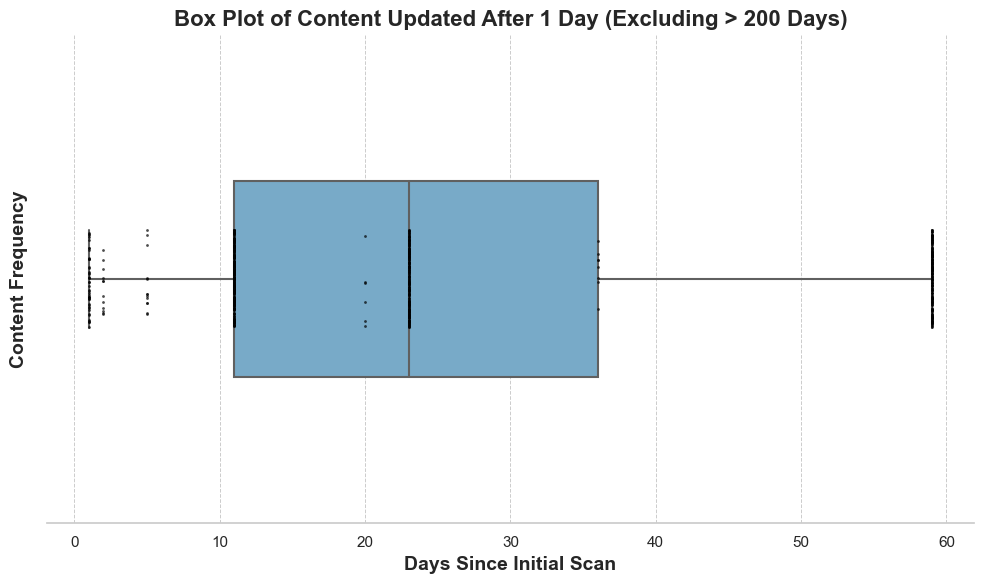

About This Project
This project uses Python to analyze and visualize school-related content data. The analysis highlights trends, outliers, and actionable insights using libraries like Pandas, Matplotlib, and Seaborn.
Explore the Jupyter Notebook
Key Visualizations
Above: A boxplot visualization highlighting trends in updated school content.